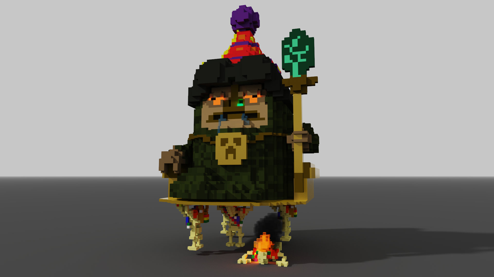

Capítulo I
El Trono de Papel Aluminio
Desde un viejo sofá envuelto en papel aluminio y pintado con spray dorado, Jevvo el Masista Supremo dirigía la “liberación” del planeta La Paz con absoluta seriedad imperial. Cinco droides agotados lo cargaban por las empedradas calles mientras él proclamaba decretos separatistas que nadie dentro del palacio había escuchado todavía.
“¡Ejecuten la Orden 63.2-b: seguir cargando!”, gritó Jevvo.